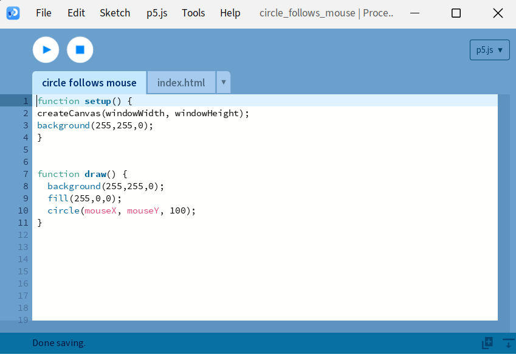
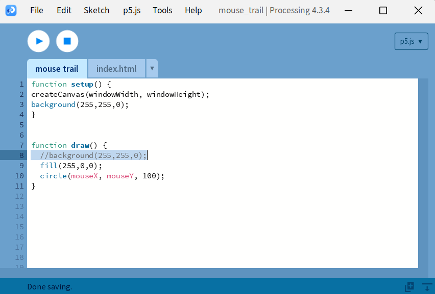

First week of Journey Through Generative Design, Interactive Coding, and Fun
In this week we were introduced to p5.js and processing. Ever wondered what happens when creativity meets coding? Let's explore this together!
In Week 4, we explored the world of generative design and creative coding through interactive coding. This week focused on understanding the basics of creative coding with P5.js, which allows us to create fun, interactive, and generative artworks. The most exciting part was diving into how generative art comes to life algorithmically and using randomness to create unique experiences!
This was my first project where I made a circle that follows the mouse around the screen. I used the code from the code snippets provided to us in the Week-4 material. I got familiar with the Processing interface and learnt basic setup and draw functions.
After trying the previous code I wanted to explore it further by making a mouse trail instead of just the circle following the mouse. I looked up for some coding references at W3 Schools and found out it could be done simply by making one change- removing the background in the draw() function.
I added randomness to this one! You can draw anything you like, and when you click, the background clears with a random color—like a fresh start every time! I actually spent a lot of time playing with it myself. See it for yourself
My robot friend here pretty much sums up how I looked while coding this. Getting the image to actually show up on screen was more confusing than I expected —
After staring at the loading screen for way too long and some trial and error , I finally got it working. Small win, big relief.
This project was inspired by Yayoi Kusama's polka dot artwork. I wanted to create something that felt spontaneous and joyful, with randomly placed, colorful dots all over the screen!
This week I got pretty deep into experimenting with randomness in creative coding, and honestly, it was more fun than I expected. Every sketch ended up feeling a bit like a surprise. Whether it was random colors, mouse tracking, or objects popping up in unexpected places, there was always something unpredictable happening on screen.
I realized how much interactivity changes the whole experience. Even small responses to the user's actions make the sketch feel more personal — like the code is kind of... alive. It also made me think about how generative art isn’t just random noise — it’s a weird blend of freedom and structure. You let go a little, but not too much, and the results feel organic.
One thing that stuck with me was the balance between control and chaos. It’s tricky, but it’s what makes generative art so cool. It’s like giving your code just enough freedom to do its thing without letting it completely spiral.
There’s definitely more I want to try — like adding a bit of narrative or letting the user guide the outcome more directly. Something that feels less like a sketch and more like an experience. But for now, I’m just glad it didn’t crash... and kind of amazed by what a few lines of code can do when you loosen the reins a bit.